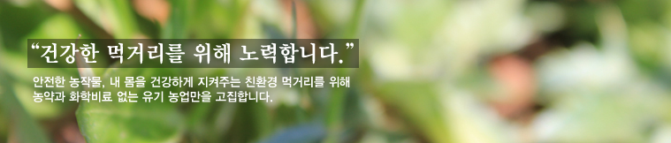

항상 저희 팜스토리를 성원해 주시고 관심을 가져주시는 모든 분들께 감사의 인사를 드리며
가정에 건강과 행복이 가득하시길 기원합니다.
팜스토리는 신선하고 안전한 먹거리로 건강한 삶 만들기에 기여합니다.
보다 좋은 농산품을 공급하기 위해 화학비료를 쓰지 않는 건강한 흙에서 유기농업으로 정성을 다해 지은 농사를 통해 믿고 먹을 수 있는 먹거리 제공에 앞장서겠습니다.
친환경 농장
팜스토리는 경기도 이천에 위치한 10만평 규모의 유기농 재배단지입니다.
친환경 캠페인
팜스토리는 2차 포장재 사용을 줄임으로써 친환경적인 포장과, 친환경적인 소비문화 정착을 위해 노력합니다.